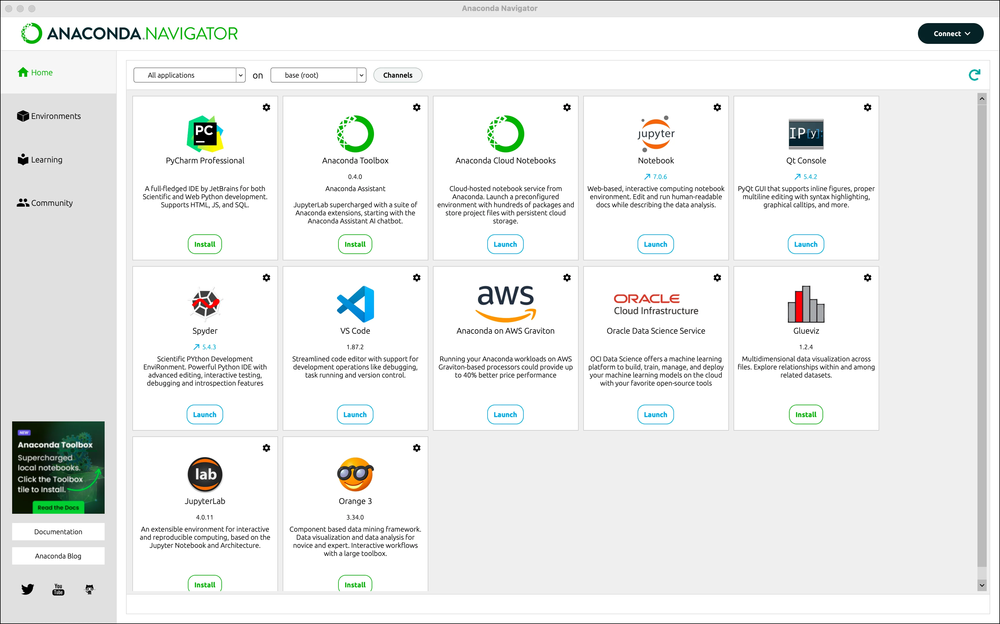
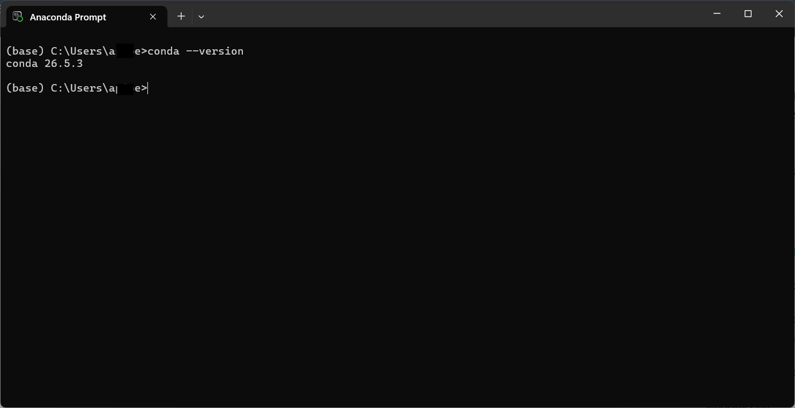

Guide de démarrage avec Anaconda et Miniconda
Installer un environnement Python scientifique avec conda
Objectif
Ce guide explique ce que sont Anaconda et Miniconda, comment installer chacun d’eux, puis pourquoi ce guide recommande finalement Miniconda pour la plupart des usages.
Si vous êtes débutant et que c’est la première fois que vous travaillez avec ces outils, il est fortement recommandé d’installer seulement un des deux, Anaconda ou Miniconda, et non les deux à la fois. Installer les deux en parallèle peut créer des conflits entre les installations de conda et compliquer inutilement vos premiers pas. Choisissez l’option qui correspond le mieux à vos besoins, en vous référant à la comparaison présentée plus bas dans ce guide, puis suivez uniquement les étapes correspondantes.
- Conda : un gestionnaire de paquets et d’environnements, capable d’installer Python lui-même ainsi que des milliers de bibliothèques scientifiques.
- Environnement : un espace isolé contenant une version de Python et des paquets spécifiques, séparé des autres environnements sur le même ordinateur.
- Paquet (package) : une bibliothèque ajoutant des fonctionnalités à Python, par exemple pour l’analyse de données ou les graphiques.
- Distribution : un ensemble regroupant Python, conda et, parfois, des paquets préinstallés.
- Terminal : la ligne de commande utilisée pour lancer les commandes
conda.
Ce dont vous avez besoin
- Un ordinateur avec Windows, macOS ou Linux.
- Une connexion Internet pour le téléchargement.
- Au moins 10 Go d’espace disque libre si vous installez Anaconda, ou environ 1 Go pour Miniconda [1].
- Environ 15 à 20 minutes pour l’installation d’Anaconda, ou environ 10 minutes pour Miniconda.
Partie 1 : installer Anaconda
Anaconda Distribution est une installation complète, qui inclut conda, Python et plus de 1 500 paquets scientifiques préinstallés, ainsi qu’une interface graphique appelée Anaconda Navigator [2].
Étape 1 : télécharger Anaconda
- Ouvrez votre navigateur et allez à l’adresse suivante : https://www.anaconda.com/docs/getting-started/installation
- Sélectionnez votre système d’exploitation (Windows, macOS ou Linux).
- Choisissez Anaconda Distribution dans la liste des installateurs.
- Sur Mac, vérifiez le type de puce de votre ordinateur avant de télécharger :
- Apple Silicon (M1, M2, M3, la plupart des modèles depuis fin 2020) : choisissez la version arm64.
- Intel (modèles plus anciens) : choisissez la version x86_64.
- Téléchargez l’installateur graphique correspondant à votre système.
Étape 2 : installer Anaconda
Sur Windows
- Double-cliquez sur le fichier
.exetéléchargé. - Cliquez sur Next, acceptez les termes de la licence.
- Choisissez Just Me (recommended) plutôt que All Users.
- Conservez le dossier d’installation proposé par défaut.
- Cliquez sur Install. Cette étape peut prendre plusieurs minutes, puisque plus de 1 500 paquets sont installés.
- Cliquez sur Finish une fois terminé.
Sur macOS
- Double-cliquez sur le fichier
.pkgtéléchargé. - Cliquez sur Continue, acceptez les termes de la licence.
- Conservez l’emplacement d’installation proposé par défaut.
- Attendez la fin de l’installation, ce qui peut prendre plusieurs minutes, puis cliquez sur Close.
Sur Linux
Dans un terminal, exécutez :
bash ~/Anaconda3-latest-Linux-x86_64.shSuivez les instructions affichées, en acceptant les valeurs par défaut si vous n’êtes pas certain d’un réglage.
Étape 3 : vérifier l’installation d’Anaconda
- Ouvrez Anaconda Navigator depuis le menu Démarrer (Windows) ou le dossier Applications (macOS).
- L’interface graphique d’Anaconda Navigator devrait s’afficher, avec une liste d’applications comme Jupyter Notebook, Spyder et JupyterLab déjà installées.

L’image ci-dessus montre l’interface d’Anaconda Navigator telle qu’elle apparaît après une installation réussie. Si vous obtenez un écran similaire, l’installation a fonctionné correctement.
Partie 2 : installer Miniconda
Miniconda installe uniquement conda et Python, sans paquet préinstallé ni interface graphique. Chaque paquet est ensuite ajouté à la demande, selon les besoins réels du projet [3].
Étape 1 : télécharger Miniconda
- Ouvrez votre navigateur et allez à l’adresse suivante : https://www.anaconda.com/docs/getting-started/installation
- Sélectionnez votre système d’exploitation (Windows, macOS ou Linux).
- Choisissez Miniconda plutôt qu’Anaconda Distribution dans la liste des installateurs.
- Sur Mac, choisissez la version correspondant à votre puce, arm64 ou x86_64, comme pour Anaconda.
- Téléchargez l’installateur graphique correspondant à votre système.
Étape 2 : installer Miniconda
Sur Windows
- Double-cliquez sur le fichier
.exetéléchargé. - Cliquez sur Next, acceptez les termes de la licence.
- Choisissez Just Me (recommended) plutôt que All Users.
- Conservez le dossier d’installation proposé par défaut.
- Dans les options avancées, cochez Add Miniconda3 to my PATH environment variable si vous voulez utiliser
condadirectement depuis n’importe quel terminal [3]. - Cliquez sur Install, puis sur Finish une fois terminé.
Sur macOS
- Double-cliquez sur le fichier
.pkgtéléchargé. - Cliquez sur Continue, acceptez les termes de la licence.
- Conservez l’emplacement d’installation proposé par défaut (install for me only).
- Attendez la fin de l’installation, puis cliquez sur Close.
Sur Linux
Dans un terminal, exécutez :
bash ~/Miniconda3-latest-Linux-x86_64.shSuivez les instructions affichées, en acceptant les valeurs par défaut si vous n’êtes pas certain d’un réglage.
Étape 3 : vérifier l’installation de Miniconda
- Ouvrez un nouveau terminal (fermez l’ancien s’il était déjà ouvert avant l’installation).
- Sur Windows, utilisez Anaconda Prompt ou Anaconda Powershell Prompt, disponible dans le menu Démarrer.
- Tapez la commande suivante :
conda --versionVous devriez voir s’afficher un numéro de version, par exemple conda 26.x.x. Cela confirme que l’installation a réussi. Contrairement à Anaconda, aucune interface graphique ne s’ouvre : tout se passe dans le terminal.

Anaconda Prompt est l’invite de commande installée automatiquement avec Anaconda ou Miniconda sur Windows. Elle permet d’exécuter les commandes conda sans configuration supplémentaire.
Pourquoi ce guide recommande Miniconda
Anaconda et Miniconda installent tous les deux conda et Python, avec accès aux mêmes dépôts de paquets. La différence essentielle est la quantité de paquets préinstallés, ce qui a un effet direct sur l’espace disque utilisé [2].
| Critère | Anaconda | Miniconda |
|---|---|---|
| Espace disque requis | Environ 9,7 Go | Environ 900 Mo [2] |
| Paquets préinstallés | Plus de 1 500 paquets scientifiques | Aucun, sauf conda et Python |
| Interface graphique (Anaconda Navigator) | Incluse | Non incluse |
| Temps d’installation | Plus long | Beaucoup plus rapide |
| Contrôle sur les paquets installés | Faible au départ, tout est déjà là | Total : vous choisissez chaque paquet |
Ce guide recommande Miniconda plutôt qu’Anaconda. Miniconda installe uniquement conda, Python et leurs dépendances minimales, ce qui représente environ 900 Mo contre près de 9,7 Go pour Anaconda [2]. Les paquets dont vous avez réellement besoin (par exemple numpy, pandas ou matplotlib) s’installent ensuite en quelques secondes avec conda install, uniquement lorsque c’est nécessaire. Cela évite d’occuper plusieurs gigaoctets avec des centaines de paquets qui resteront probablement inutilisés.
Si vous avez déjà installé Anaconda à l’étape précédente et que vous souhaitez basculer vers une approche plus légère, il est possible de désinstaller Anaconda plus tard et de repartir avec Miniconda seul, sans perdre vos projets, à condition d’avoir sauvegardé le code source de vos projets séparément (par exemple avec Git).
Comprendre les environnements conda
Qu’il s’agisse d’Anaconda ou de Miniconda, la logique des environnements est identique une fois l’installation terminée.
Un environnement conda est un espace isolé, avec sa propre version de Python et ses propres paquets. Travailler avec des environnements séparés évite qu’un projet n’entre en conflit avec un autre. Si vous voulez approfondir le concept d’environnement, vous pouvez vous référer à la documentation officielle d’Anaconda.
Pour lister les environnements existants :
conda env listAprès une installation fraîche, vous devriez voir un environnement nommé base.
Créer et utiliser un environnement
Il est recommandé de ne jamais installer de paquets directement dans l’environnement base, pour le garder simple et stable.
Créez un nouvel environnement nommé mon_premier_env, avec une version spécifique de Python :
conda create --name mon_premier_env python=3.11Répondez y lorsque conda demande une confirmation.
Pour l’activer :
conda activate mon_premier_envLe nom de l’environnement actif apparaît généralement entre parenthèses au début de la ligne de commande, par exemple (mon_premier_env).
Pour revenir à l’environnement de base :
conda deactivateInstaller et lister des paquets
Une fois l’environnement activé, installez un paquet à la demande. Par exemple, pour installer numpy :
conda install numpyPour voir tous les paquets présents dans l’environnement actif :
conda listSupprimer un environnement inutile
Si un environnement n’est plus nécessaire, vous pouvez le retirer pour libérer de l’espace disque :
conda env remove --name mon_premier_envBonnes pratiques pour débuter
- Préférez Miniconda à Anaconda si l’espace disque ou la rapidité d’installation vous importent.
- Créez un environnement distinct pour chaque projet, plutôt que de tout installer dans
base. - Donnez des noms d’environnement clairs, liés au projet concerné.
- Installez uniquement les paquets dont vous avez besoin, plutôt que d’installer par précaution.
- Utilisez toujours
conda deactivateavant de fermer un terminal, par bonne habitude. - Documentez les paquets nécessaires à un projet avec
conda list --exportpour pouvoir recréer l’environnement plus tard.
Vérification des acquis
À ce stade, vous devriez être capable de :
- Installer Anaconda et reconnaître son interface Anaconda Navigator.
- Installer Miniconda et vérifier son installation avec
conda --version. - Expliquer la différence principale entre Anaconda et Miniconda, en particulier au niveau de l’espace disque.
- Créer, activer et désactiver un environnement conda.
- Installer un paquet dans un environnement actif.
- Supprimer un environnement devenu inutile.
Créez un environnement nommé essai_conda avec Python 3.11, activez-le, installez le paquet pandas, puis vérifiez qu’il apparaît bien avec la commande conda list.
Références
1. Conda — Installing conda
2. Anaconda — Anaconda Distribution vs. Miniconda
3. Carpentries Incubator — Introduction to Conda for (Data) Scientists: Setup